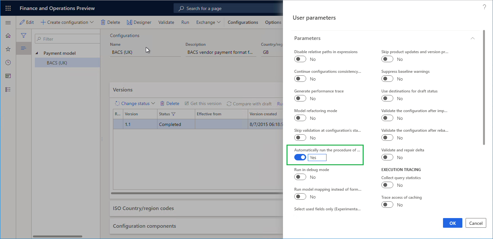
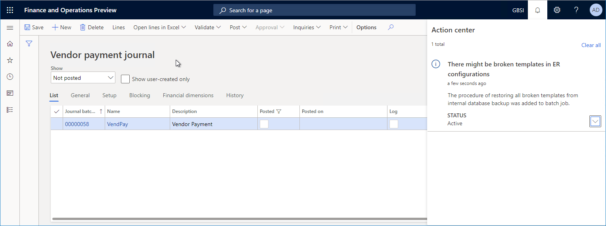
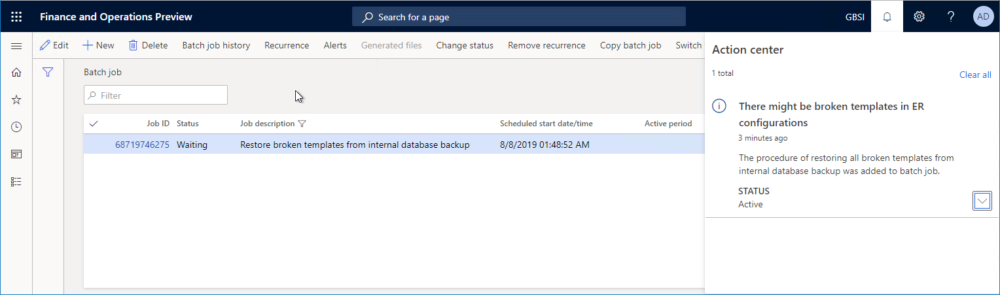
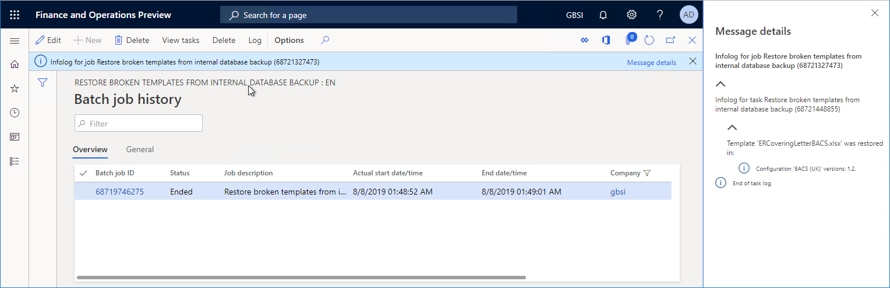
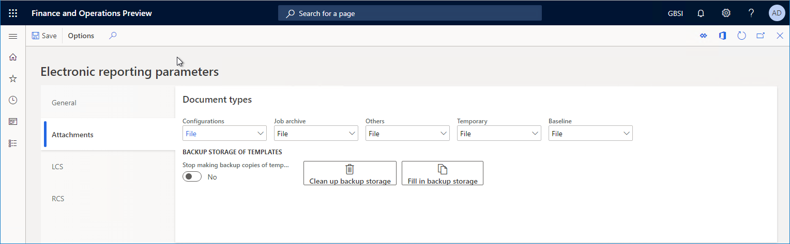

Sicherungsspeicher von ER-Vorlagen
[!include[banner](../includes/banner.md)]Mit der Elektronischen Berichterstellungs(EB)-Übersicht können geschäftliche Benutzer Formate für ausgehende Dokumente in Übereinstimmung mit den rechtlichen Anforderungen verschiedener Länder und Regionen konfigurieren. Konfigurierte ER-Formate können vordefinierte Vorlagen verwenden, um ausgehende Dokumente in verschiedenen Formaten zu generieren, z. B. Microsoft Excel-Arbeitsmappen, Microsoft Word-Dokumente oder PDF-Dokumente. Die Vorlagen sind mit den Daten gefüllt, die der konfigurierte Datenfluss für generierte Dokumente erfordert.
Jedes konfigurierte Format kann als Teil einer ER-Lösung veröffentlicht werden. Jede EB-Lösung kann von einer Finance and Operations-Instanz exportiert und in eine andere Instanz importiert werden.
Das EB-Framework verwendet die Konfigurieren der Dokumentverwaltung (This is an external link), um erforderliche Vorlagen für die aktuelle Finance and Operations-Instanz beizubehalten. Je nach Einstellungen des ER-Frameworks kann Microsoft Azure BLOB-Speicher oder ein Microsoft SharePoint-Ordner als physischer Primärspeicherort für Vorlagen ausgewählt werden. (Weitere Informationen, finden Sie unter Konfigurieren des Elektronischen Berichterstellungs(EB)-Frameworks (This is an external link).) Die DocuValue-Tabelle enthält einen einzelnen Datensatz für jede Vorlage. In jedem Datensatz speichert das Feld AccessInformation den Pfad einer Vorlagendatei, die sich im konfigurierten Speicherort befindet.
Wenn Sie Ihre Finance and Operations-Instanzen verwalten, können Sie die aktuelle Instanz zu einem anderem Speicherort migrieren. Sie können Ihre Produktionsinstanz beispielsweise zu einer neuen Sandboxumgebung migrieren. Wenn Sie das ER-Framework konfigurieren, um Vorlagen im BLOB-Speicher zu speichern, verweist die DocuValue-Tabelle in der neuen Sandboxumgebung auf die BLOB-Speicherinstanz in der Produktionsumgebung. Auf diese Instanz kann jedoch nicht über die Sandboxumgebung zugegriffen werden, da der Migrationsvorgang die Migration von Artefakten im BLOB-Speicher nicht unterstützt. Daher tritt eine Ausnahme auf, wenn Sie versuchen, ein ER-Format auszuführen, das eine Vorlage zum Generieren von Geschäftsdokumenten verwendet, und Sie erhalten eine Benachrichtigung, dass die Vorlage fehlt. Sie erhalten eine Anleitung dazu, wie Sie die in der ER-Formatkonfiguration enthaltene Vorlage mit dem ER-Bereinigungstool löschen und erneut importiert. Dieser Vorgang kann zeitaufwändig sein, da Sie möglicherweise über mehrere ER-Formatkonfigurationen verfügen.
Mithilfe des Sicherungsspeichers der ER-Vorlagenfunktion können Sie Ihre Vorlagen so erstellen, dass sie immer zum Generieren von Geschäftsdokumenten verfügbar sind.
Note
Diese Funktion kann nur verwendet werden, wenn BLOB-Speicher als physischer Speicherort für ER-Vorlagen ausgewählt wurde.
Automatisierte Wiederherstellung und Benachrichtigung
Für diese Funktion wird jede Vorlage einer neuen ER-Formatkonfiguration in der aktuellen Umgebung automatisch am Sicherungsspeicherort für Vorlagen (die ERDocuDatabaseStorage-Datenbanktabelle) gespeichert, wenn die folgenden Ereignisse auftreten:
- Sie importieren eine neue ER-Formatkonfiguration, die eine Vorlage beinhaltet.
- Sie schließen die Entwurfsversion einer ER-Formatkonfiguration ab, die eine Vorlage beinhaltet.
Sicherungskopien von Vorlagen werden als Teil der Anwendungsdatenbank zu einer neuen Finance and Operations-Instanz migriert.
Wenn für die Erstellung ausgehender Dokumente die Vorlage eines ER-Formats erforderlich ist, beispielsweise zum Verarbeiten von Kreditorenzahlungen einschließlich der Erstellung von Zahlungsavis- und Kontrollberichten, die erforderliche Vorlage am primären Speicherort jedoch nicht gefunden wird, treten die folgenden Ereignisse auf:
Wenn die Vorlage am Sicherungsspeicherort verfügbar ist, wird sie automatisch vom Sicherungsspeicherort übernommen, am primären Speicherort wiederhergestellt und für die aktuelle Ausführung verwendet.
Jeder Benutzer, der der Rolle Elektronischer Berichterstellungsentwickler oder Systemadministrator zugeordnet ist, erhält über das Aktivitätszentrum eine Benachrichtigung, dass die Vorlage fehlt. Die angezeigte Meldung hängt vom Wert des Parameters Prozedur zur Wiederherstellung der fehlerhaften Vorlagen automatisch im Stapelverarbeitungsmodus ausführen ab.
- Wenn dieser Parameter auf Aus festgelegt ist, empfiehlt die Meldung, die Stapelverarbeitung zu starten, damit ähnliche Probleme für andere ER-Formatkonfigurationsvorlagen automatisch behoben werden. Die Meldung enthält einen Link, über den Sie die Stapelverarbeitung starten können.
- Wenn dieser Parameter auf Aktiviert festgelegt ist, erhalten Sie eine Benachrichtigung, dass das Problem einer fehlenden Vorlage erkannt wurde und der neue Stapelverarbeitungsprozess Fehlerhafte Vorlagen aus interner Datenbanksicherung wiederherstellen automatisch geplant wurde. Dieser Stapelverarbeitungsvorgang behebt automatisch ähnliche Probleme für andere Vorlagen.
Um den Parameter Prozedur zur Wiederherstellung der fehlerhaften Vorlagen automatisch im Stapelverarbeitungsmodus ausführen einzurichten, führen Sie die folgenden Schritte aus:
- Öffnen Sie in Finance and Operations, die Organisationsverwaltung > Elektronische Berichterstellung > Konfigurationenseite.
- Auf der Seite Konfigurationen im Aktivitätsbereich, auf der Registerkarte Konfigurationen in der Gruppe Erweiterte Einstellungen wählen Sie Benutzerparameter aus.
- Legen Sie im Dialogfeld Benutzerparameter den erforderlichen Wert für den Parameter Prozedur zur Wiederherstellung der fehlerhaften Vorlagen automatisch im Stapelverarbeitungsmodus ausführen fest.
Note
Dieser Parameter ist als Anwendungsbenutzer definiert und als unternehmensspezifisch protokolliert.

Die folgende Abbildung zeigt ein Beispiel der Meldung an, die angezeigt wird, wenn der Parameter Prozedur zur Wiederherstellung der fehlerhaften Vorlagen automatisch im Stapelverarbeitungsmodus ausführen auf Aktiviert festgelegt ist.

Die folgende Abbildung zeigt den Stapelverarbeitungsvorgang Fehlerhafte Vorlagen aus interner Datenbanksicherung wiederherstellen auf der Seite Stapelverarbeitungsauftrag.

Das Ausführungsprotokoll des abgeschlossenen Stapelverarbeitungsvorgangs Fehlerhafte Vorlagen aus interner Datenbanksicherung wiederherstellen enthält Informationen zu den Vorlagen, die aus dem Sicherungsspeicherort im primären Speicherort wiederhergestellt wurden.

Die automatische Erstellung von Sicherungskopien, die sich in ER-Formatkonfigurationen befinden, ist standardmäßig aktiviert. Um die Erstellung von Sicherungskopien von Vorlagen zu beenden, legen Sie die Option Erstellung von Sicherungskopien von Vorlagen beenden auf der Registerkarte Anhänge der Seite Elektronische Berichterstellungsparameter auf Ja fest. Sie können diese Seite über den Arbeitsbereich Elektronische Berichterstellung öffnen.
Wenn Sie die Option Erstellung von Sicherungskopien von Vorlagen beenden auf Ja festlegen und die zuvor aus Vorlagen erstellten Sicherungskopien nicht beibehalten möchten, wählen Sie Sicherungsspeicher bereinigen auf der Seite Parameter für elektronische Berichterstellung aus.
Wenn Sie Ihre Umgebung auf Finance and Operations 10.0.5 (Oktober 2019)aktualisiert haben und zu einer neuen Umgebung migrieren möchten, die EB-Formatkonfigurationen enthält, die ausgeführt werden können, wählen Sie Sicherungsspeicher füllen auf der Seite Elektronische Berichterstellungsparameter aus, bevor die Migration ausgeführt wird. Mit dieser Schaltfläche wird die Erstellung von Sicherungskopien aller verfügbaren Vorlagen gestartet, sodass sie im ER-Sicherungsspeicherort für Vorlagen gespeichert werden können.

Manuelle Wiederherstellung
Gehen Sie zu Organisationsverwaltung > Elektronische Berichterstellung > Defekte Vorlagen wieder herstellen, um den Prozess des Wiederherstellens von EB-Vorlagen vom Sicherungsspeicherort zum primären Speicherort manuell zu starten. Bevor Sie diesen Vorgang starten, können Sie auf der Seite Defekte Vorlagen wiederherstellen angeben, ob dies interaktiv ausgeführt wird oder der Stapelverarbeitungsvorgang wird dafür geplant.
Unterstützte Bereitstellungen
In Finance and Operations Version 10.0.5 ist die Sicherungsspeicherung der EB-Vorlagenfunktion nur in den Cloudbereitstellungen verfügbar.
Zusätzliche Ressourcen
Überblick über die elektronische Berichterstellung (Electronic reporting, ER)
Konfigurieren Sie das Electronic Reporting (ER) Framework (This is an external link)